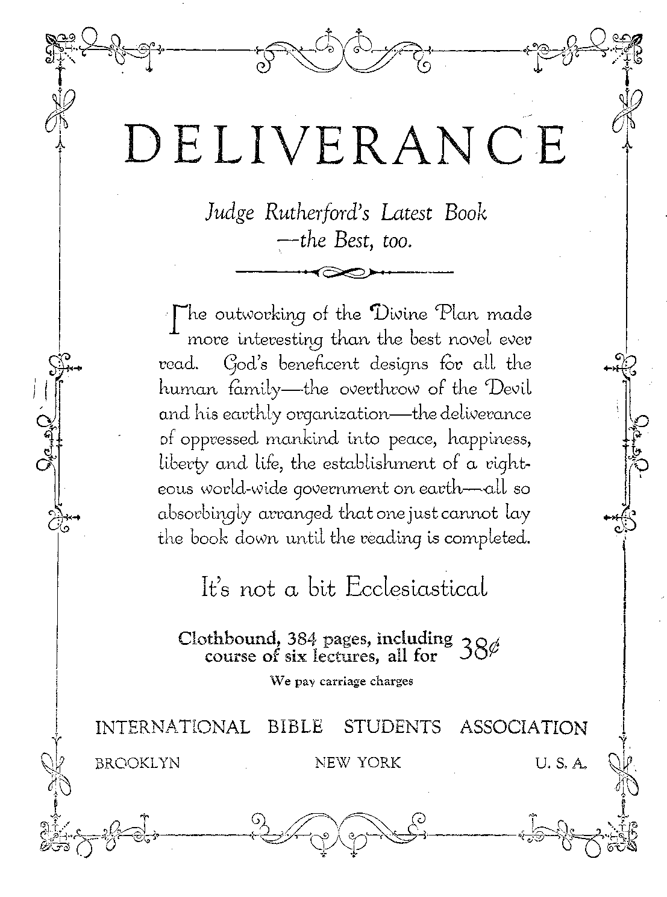

! - ■
Pitiful Condition of Passaic Textile Workers
Tuggers in the Somerset Coal Fields
Social and Educational
Charitable Institutions Are Profitable
Mii.es Darden vs. Og os? Bashan
Finance—Commerce—Transportation
Will a Deflation of Labor Be Attempted? ......... 39
Chattel Mortgages in Rockford . .
Britain’s Impossible Financial Load .........'. . 42
Political—Domestic and Foreign
Texas Maintains Freedom of Citizens .....
I-Iohenzollern Estates Not Confiscated
Clerical Government Emis in Lithuania
Home and Health
Warnings of a Dermatologist ....... . .
Asphyxiated Man Restored to Life ..............
An Interesting Vaccination Story . .
Travel and Miscellany
Cub American National Parks ........
Religion and Philosophy
Christ in the Book of Genesis . .
’World Religions and Their Origin ........• ... 57
Studies in “The Harp of God”..............
Published every other Wednesday at 18 Concord Street, Brooklyn, N. Y„ U. S. A., by WOODWORTH, HUDGINGS & MARTIN
Copai tilers and Proprietors A ddress: 18 Concord Street, Brooklyn, N. Y., li. S. A. CLAYTON J. WOODWORTH . . . Editor ROBERT J. MARTIN . Business Manager WM. It HUDGINGS . . Sec’y and Treas.
Five Cents a Copy—$1.00 a Year Maks Remittances to THE GOLDEN Aff> Notice to Subscribers: We do not, as a rule, send a card of acknowledgment for a renewal or for a new subscription. A renewal blank (carrying notice of expiration) will be sent with the journal oue month before the subscription expires. Change of address, when requested, may be expected to appear on address label within one month. Foreign Offices : British ..... 34 Craven Terrace, Lancaster Gate, London W. 2 Canadian ......... 38-40 Irwin Avenue, Toronto, Ontario Australasian-, ...... 495 Collins Street, Melbourne, Australia South African ...... 6 Lelie Street, Cape Town, South Africa
Entered as second-class matter at Brooklyn, N. Y., under the Act of March 3, 1879
Volume VIII Brooklyn, N.Y., Wednesday, October 20, 1926 Number 185
ists say that in a day in the Great Smokies they find a greater vaiuety of trees than are native to all of Europe.
On the summits of the Great Smokies there are frosts every night in the year, and yet spring begins in March and the fluwers last far into December. The Great Smoky Mountains are in the first half-dozen of the most remarkable natural scenes in the country. There are 125 peaks in the area, several of which are over 6,000 feet in height.
Another national park will probably be erected in an isolated part of Eastern Tennessee, where lies the largest remaining virgin hardwood forest in the United States. It is a bit' of absolute wilderness, and the effort will be made to keep it so.
Still another national recreation ground in the East will likely be located at Isle Royale, in the heart of Lake Superior. The government has already acquired 9,121 acres there with that in view. Isle Royale is the only known place where chlorastrolites (green stones) are found. In the entire island, which covers 132,000 acres, evidence of prehistoric mining has been uncovered in three places. The island offers rare opportunities for research and study.
Sully’s Hill—Wind Cave— Hot Springs
rpiIE Sully’s Hill, North Dakota, National Park occupies one and one-eighth square miles and is an important wild game preserve. A similar wild animal and bird reservation of great extent will be established in the bottom lands of the Mississippi river, between Minnesota and Wisconsin. It is the natural channel of migration of water fowl to and from the northern feeding grounds. The Sully’s Hi Park was established in 1904.
The Wind Cave, South Dakota, National Park, occupies seventeen square miles and contains miles of galleries and chambers peas
THE World War and the development of the automobile have been the means of attracting the attention of Americans to the scenic treasures of their own country. Fox' five years Europe was closed to visitors; and it is only recently that it has seemed to millions of Americans as little less than a madhouse in which the inmates are recovering from a protracted frenzy.
Anyway, America now has nineteen national parks, with a total area of 11,372 square miles; and more parks are in the making. The annual cost to the nation is but a trifle. Revenues derived from the operation of the parks amount to nearly a third of their operating cost of $1,402,000. About 1,500,000 persons visit these parks annually.
The only one of the national parks east of the Mississippi river (outside of a little one in New York harbor) is the Lafayette, established in 1919. It consists of a group of granite mountains on Mount Desert Isle, Maine, the island upon which is located the famous watering place, Bar Harbor. The park contains only eight square miles.
THE people of the eastern part of the United States, realizing that there are great scenic attractions in the East as well as in the West, are now pressing for the purchase and establishment of several more parks in the East. One of these may perhaps be the battlefield of Yorktown, Virginia, the scene of the surrender of Cornwallis. The area is approximately 1,100 acres.
The principal national park in the East it is expected will be in the Great Smoky Mountains of Tennessee, North Carolina and Virginia. Geologists claim that these are the oldest mountains on earth, the breeding ground of all the hardwood forests of the world. Botan
culiar formation. It was established in 1903.
The Hot Springs, Arkansas, National Park occupies one and one-quarter square miles, in which are to be found forty-six hot springs possessing curative properties. These hot springs, the most noted in the United States, issue from volcanic rock at the base of a mountain. Hot .Springs was established in 1832. The government now maintains there a national hospital for soldiers and sailors, and provision is made for the public to bathe without charge. The city has a permanent population of 10,000 and entertains more than 100,000 visitors a year. The waters contain calcium, magnesium, carbonates, lithium, bromides and iodides, and are too warm to be quaffed readily. They must be sipped, like hot coffee.
Like the Jamestown Exposition at Norfolk, the authorities at Hot Springs once offended the reporters of the associated American press, and they did the same thing in the one place as in the other—they ignored the town for twenty-five years and nearly ruined it. But its natural advantages have brought it forward, in spite of the handicap it thus received.
LATT, Oklahoma, National Park contains one and one-fourth square miles in which are many sulphur and other springs of medicinal value. It was established in 1904, and has over 100,000 visitors a year.
Bock Mountain National Park, in Colorado, contains 397% square miles of snowy ranges and peaks 11,000 to 14,255 feet in altitude in the heart of the Rockies. This is a most astonishing aggregation of lofty peaks of solid granite and of beautiful valleys, the whole perched on top of the Continental Divide. This park has the largest visiting list of any of the national parks, running to over 200,000 per year.
Mesa Verde, Colorado, National Park, in the southwestern part of the state, contains seventyseven square miles, and has within its confines the most notable and best preserved prehistoric cliff dwellings in the world. It was established in 1906.
YELLOWSTONE National Park, in the northwestern corner of Wyoming, but extending into Idaho and Montana, contains 5,575 square miles, within which are more and greater geysers than in all the rest of the world together. Although the park season lasts only three months of the year, and the district is far remote from the chief centers of population, yet in point of visitors it stands second on the list and is rightly considered one of the chiefest show places of the world. It was established in 1872.
The Yellow’stone Park is surrounded on all sides with snow-clad ranges and peaks, rising 10,000 to 12,000 feet in height, whilesthe general elevation of the plateau which comprises the park is about 7,800. In this plateau are three separate basins of geysers in the valley of what is known as the Firehole river.
The larger geysers have individual names. The Giant and the Giantess have immense craters; the Bee Hive and the Castle are so called on account of the shape of their cones; the Sawmill and the Lion reproduce faithfully, in their sounds, the sawmill in action and the lion roaring; Old Faithful spouts steam and water at regular intervals of sixty-four minutes, and has never been known to vary; Hell’s Half Acre is a crater of hissing steam; the Devil’s Paint Pot is a mud volcano which constantly changes its colors.
The Yellowstone Park contains the only truly wild buffalo herd to be found in the United States. It has the Grand Canyon of the Yellowstone river, ten miles long, with walls in places 1,400 feet high, and a falls 310 feet high. In the southwest corner is the Bechler river, a surpassingly wild and beautiful region of one cascade after another. The park also contains numerous lakes, the Yellowstone, the Shoshones, and others; and several high mountain peaks. Some of these regions are so impassable that they have never been visited by more than a hundred white men, although all will be made available to the public in the near future.
Efforts have been made to seize part of the Bechler river region for irrigation purposes. There are always powerful financial interests anxious to seize anything that belongs to the people and to use it for private gain.
The management of the national parks has granted monopolies to a transportation company which holds the visitors to a fixed schedule of five minutes here or twenty minutes there.
The drivers of the cars are hoys who know nothing about the scenery, care less, and answer no questions. Private cars must pay a toll of $7.50 for going through the Yellowstone. It is alleged that poor visitors are discriminated against by the management.
GLACIER National Park, Montana, has an area of 1,534 square miles and, like Rocky Mountain and Yellowstone, stands astride the Continental Divide. In a district a little larger than the state of Rhode Island are sixty glaciers, ranging in size from a few acres to several square miles.
There are 250 glacier-fed lakes; scores of cascades and waterfalls; numerous precipices overlooking yawning chasms thousands of feet deep; sedimentary rocks, twisted, jumbled and gorgeously colored; and, withal, a fine automobile road through this last home of that vanishing and greatly abused race, the Blackfeet Indians.
In the Glacier National Park are still some of the Rocky Mountain sheep and the Rocky Mountain goat. Here, too, are elk, deer, black and grizzly bears, and mountain lions. The new roads follow the old game trails, amid scenes of such primeval beauty as would make almost anyone gasp.
Zion National Park, in southwestern Utah, contains 120 square miles. Its attraction is Zion Canyon, with walls ranging from 800 to 2,000 feet. This park was established in 1919. From Zion National Park it is only a relatively short drive by automobile to:
Grand Canyon National Park, in northern Arizona, earth’s largest and noblest example of erosion. This canyon, one mile in vertical depth and thirteen miles from rim to rim, is gorgeously carved and colored, constituting it one of the natural wonders of the world. The park contains 958 square miles, and was established in 1919. More than 100,000 visitors come to see the Grand Canyon annually. The Kaibab Suspension Bridge, by means of which the trails on the sides of the canyon are connected near the water level, was built with the greatest difficulty. The cables were carried down by a corps of hardy mountain rangers, the only form of locomotion that could be used.
jV/TOUNT Rainier National Park, in the state IXL of Washington, contains 324 square miles and embraces one of the most interesting singlepeak mountain systems in the world. Mount Rainier has twenty-eight glaciers, from 50 to 500 feet thick, and embracing in all some 48 square miles of glacier surface. Every year this area has more than 100,000 visitors. The park was established in 1899.
Crater Lake National Park, in the state of Oregon, occupies 249 square miles. Crater Lake itself is said to be the deepest and bluest accessible lake in the world. With sides 1,000 feet high it occupies the hole left after a large volcano had slipped back into the earth’s interior through its own rim. The park was established in 1902.
Lassen Volcano Park, California, embraces 124 square miles and contains within its limits the only active volcano in the United States proper. In the park area there are also hot springs and mud geysers. The park was established in 1916.
HRHE far-famed Yosemite National Park, California, occupies 1,125 square miles, and contains what is considered to be one of the most remarkable gorges in the world. At the head of the gorge, which is seven miles long and enclosed within granite walls 3,000 to 5,000 feet high, the Merced river plunges over two precipices, which are 600 and 400 feet high respectively. The Bridal Veil malms a leap of 630 feet and tumbles over 300 feet of additional cascade, while the Virgin’s Tears fall 1,000 feet.
The name Yosemite (pronounced yo-sem' -ity) is an Indian name for the huge grizzly bears that are even yet found in the Yosemite region. The valley itself was discovered by white men in 1851, when they followed a band of troublesome Indians into it. The park Avas established in 1890, and next to the Rocky Mountain National Park of Colorado and the Yellowstone it has the largest number of visitors of any of the national parks. Private cars pay a toll of $5 for the use of the Yosemite roads.
The Sequoia National Park, California, area 252 square miles, contains more than a million Big Trees, 12,000 of which are over ten feet in diameter. Some are more than thirty feet in diameter and are about 6000 years old—the largest and oldest living things on earth. The park was established in 1890; and at the same time there was also established the General Grant National Park, California, four square miles area, created to preserve the General Grant Tree, thirty-five feet in diameter.
HE Hawaii National Park is in three sections, aggregating 187 square miles. Two of these are located on Hawaii and the third on Maui. Mauna Loa is the largest living volcano in the world; while Kilauea, with its lake of fire, has been active for a century and draws visitors from all over the world. The park was established in 1916.
Ilawaiians expect to see an addition made to the national park area, which will embrace the Waimea Canyon, ten miles long and three thousand feet deep with side canyons, making in all about twenty-five square miles. The walls are colored with deep reds and browns, eroded after the manner of the Grand Canyon in Arizona.
Mount McKinley National Park, in Alaska, covers 2,645 square miles and is scenically the world’s loftiest mountain, since it rises more than 20,000 feet above sea level and 17,000 feet above the surrounding valleys. The park was established in 1917; but the trail into it is so difficult that only thirty-four visitors entered it with saddle and pack ojitfits in one year. It •will be a long time before this park will be generally accessible.
Bedloe Park, the tiny island in NewT York harbor whereon stands the Statue of Liberty, is a newly established national park, the smallest of them all.
Central and Bronx Parks
E CANNOT attempt any extended notice of the many beautiful and wonderful state and civic parks which are the pride of their respective localities. A thousand localities might very properly claim space in any such notice. But we will mention one or two.
For instance, there is Central Park, in the heart of New York City. The site was purchased in 1856, at which time it was a swampy, rocky district of pigsties and shanties. To make it beautiful required the expenditure of about $40,000,000. But the money was well spent; for 30,000,000 visit the park annually, and. today it is one of the beauty spots in New York City.
The park has 840 acres and eighty gardeners. The soil is poor, necessitating many tree plantings annually. There are so many visitors that they are a strain upon the park’s hospitality. The workers employed are not sufficient to keep the park reasonably free from papers, food, banana skins, orange peelings and bottles. In hottest weather the poor are permitted to sleep in the parks, and properly so. At such times an extra force of police is employed to protect the sleepers.
In order to save the park from ruin, it has been necessary to plant in certain places hedges of buckthorn, white fhorn and other varieties of thorn, including the long-spiked, aurelia. Only by these means can certain typos of people be prevented from taking short cuts and thus mutilating the grass-covered areas. •
Bronx Park, New York City, where the zoological specimens are kept, has a very fine zoo where the children of the great metropolis can see sheep and coves and oxen, besides many other creatures which were not so familiar to their ancestors. The annual visiting list of this park is 2,500,000. '
Sometimes the parkway authorities get after despoilers of the scenery along lines of justice calculated to make the offenders think. One of the park police compelled a motorist to walk back four miles and pick up the candy wrappers which he had been throwing out of his machine as he sped along. Next time he will probably put them into his pocket.
The proposition is often made to remove the prisons and asylums from Ward’s, Welfare and Randall’s Islands, in the East River alongside New York City, and turn these over to the people for park purposes. The suggestion is a good one.
A Few State Park Items
rpi-IE Long Island State Park Commission is planning to secure the tip of Long Island, Montauk Point, for park purposes. The island ends in a sharp, stony bluff, topped with a lighthouse, banded dark and white, which can be seen from the New England steamers as they enter and leave Long Island Sound. The bluffs on the south shore of Montauk Point are one of the most picturesque bits of scenery on the North Atlantic Coast.
Midway to Montauk Point, or hardly that, the same commission has secured for park purposes the George C. Taylor estate. Mr. Taylor was an interesting character in his day. He wanted a herd of elk on his estate, and actually had them. Even today a hundred deer are browsing safely on the lands which he purchased and set aside for their use.
The Indiana State Park Commission will convert into a state park the Indiana sand dunes, a narrow strip of land only an hour’s ride out of Chicago. The sands of the duneland are not like ocean sands but are more like fine flour, so fine that they creak when walked upon.
It is said that in the duneland the “dead” dunes (i. e., the ones not constantly shifting with the winds) present a remarkable combination of plants, trees and flowers from widely separated latitudes, making it one of the world’s most interesting botanical centers.
The World Kaleidoscope
[Badlocast from Watchtower WBBR on a wave
length of 426.4 meters by the Editor.]
AN EXAMINATION of 400 of the striking textile workers of Passaic shows that, owing to the wretched wages, tuberculosis is hvelve times higher than for 16,000 policy holders examined by the Metropolitan Life Insurance Company; six times greater than among 50,000 garment workers; five times the rate for printers and three times the rate among furriers.
THE President and the Secretary of the
Treasury have often expressed the idea that large aggregations of capital are desirable. They seem to have had their wishes w’ell realized in the case of the Aluminum Company of America, of vdiich Mr. Mellon, Secretary of the Treasury, is the guiding spirit and the patron saint. It is claimed that the total investment in this company was less than $3,000,000, but that its assets and cash dividend together amount to more than $136,000,000. '
ACCORDING to Commerce and Finance a prominent group of Wall Street men have agreed that the next step that must be taken is to deflate labor. That able paper then suggests what we believe to be the fact, that the deflating of labor vmuld actually Idll the goose that lays the golden egg. Put the common people on starvation wages and the present tremendous American prosperity would pass in a night. To spend money people must have it to spend. Profits can be made when the people are spending freely; but when they have no margin, prosperity is done.
A LITTLE while ago it looked as if parents everywhere would be compelled to submit to having the nonsensical doctrine of evolution hammered into their children through the textbooks used in the schools. Stoutly maintaining that those who believe in God still have some rights in this world, the lawmakers of Texas have excluded from the state textbooks theories which have as their objective the destruction of faith in their Creator.
TN THE minds of many people historic Concord, Mass., stands for what America stands for, including .liberty and freedom of speech. Supposing such to be the case the Young People’s Peace Conference assembled there, but were forthwith turned out of one church; and when another opened its doors they were warned by the Concord Legion to desist. After a week of intermittent stoning and fusillades with rotten eggs the peace delegates gave up their attempt to enjoy their liberties and left town.
rp HE bottom seems to be pretty well out of the
Florida boom, as everybody expected it would be by this time. The effort to turn an entire state, and a large state at that, into suburban lots was bound to hit a snag some time. The really valuable pieces of real estate in Florida are as valuable as ever, but the artificial boom is over. Many hanks have gone down in the crash.
THE true hero is always more anxious to do his deed of heroism than to get his name into the papers. New Rochelle, New York, or its vicinity, has such a hero in the person of an aviator w’ho saved two from drowning and when asked his name replied, “Forget it/’ and flew off unidentified. Flying a hydroplane he saw the two men struggling in the water, and dropped down just in time to keep them from going under. -
TN ADVERTISING for subscriptions for a $3,000,000 loan for the extension of Roman Catholic hospitals, asylums, schools and institutional homes in Germany, the advertisers point out that while these institutions are not run for profit, they nevertheless do produce a profit, derived principally from payments received from Insurance Societies operated by the German government. Investments of this nature are not subject to any charges under the Dawes plan.
WE HAVE before us a list of the chattel mortgages issued in Rockford, Illinois, for the week ending March 25th last. One hundred and four persons gave such mortgages: eighty-two of them were for automobiles, nineteen for furniture, three for business equipment. We have also the list in the same city for the week ending April first. In that week there were ninety-eight mortgages. Seventy-one of them were for automobiles, twenty-five for furniture, two for business equipment. These figures give some idea of the widespread purchase of goods on the installment plan, and of how large a Vlace automobiles play in such purchases.
Increased State and Municipal Expenditures ' THE federal government has reduced its expenditures by about $1,000,000,000 'a year compared to what it was in 1921, but the expenditures of states and municipalities in the United States have so greatly increased that the total expenditures of all three were greater in 1925 than they were four years earlier. Ambitious and far-reaching road building and education programs are the principal items in the increased expenditures.
T EWISTOWN, MONTANA, has a so-called Honor Board, of which forty leading business houses of the city are members. The most trifling debt owed to any of these concerns results in a veiled threat from the Honor Board that immediate payment must he made or every one of the forty concerns will withhold credit,, In effect the Honor Board maintains an effective blackist which in other lines is illegal. Chambers of Commerce elsewhere perform like services for their members.
A MURDERER with a high school training was put to death in Georgia. At his funeral, which was held in Quincy, Illinois, it is said that no church in the city was large enough to hold the crowds which attended. Accordingly the services were held in a park. The casket was smothered with flowers, etc., etc., ad nauseam. What is at the bottom of this glorification of murderers? The answer is, The glorification of militarism and the neglect of the Bible.
<£TpASCISM” is a word derived from
J- “fasces”, the symbol of ancient Roman authority. The “fasces” were a bundle of rods, symbolical of beating, bound up along with an executioner’s axe. Curiously enough, just at this time, when the whole world is interested in Fascism, and wondering whereto this peculiar form of anarchy will lead, the United States government bears this very symbol of Fascism on its dimes of the date of 1924. One wonders if this design is by the same artist that decorated one issue of $1 bills so freely with crucifixes and other insignia of Roman Catholicism.
THE handling of the United States mail, once the pride of the world, is getting back to its old high standard of efficiency. In some lines there is improvement, particularly in the handling of mails from incoming European steamers. The mails from these steamers, picked up at Quarantine, are often delivered in Cleveland or Boston before the passengers are ashore.
THAT Uncle Sam is taking no chances if something should start somewhere affecting his interests seems borne out by the provision made for new airplanes and dirigibles. The bill which has been approved calls for the construction of 1947 planes of all types, 1,000 of which are to be available at all times for service with the Navy. The bill authorizes the construction of two gigantic dirigibles for naval service, each three times the size of the Shenandoah.
IT IS claimed that a sure method of determining if death of a human being has actually occurred is to pass a strand of blue thread through a fold in the skin. If left for 30 minutes and if life is extinct the thread Will turn yellow, due to the fact that at death the blood, previously alkaline, turns acid.
Dr. Charles Pabst, dermatologist of the Greenpoint Hospital of Brooklyn, is reported to have said:
Ten million American flappers are doomed to a haggard and anemic middle life by the craze for boyish forms. They are making sure of vinegar-visaged old age. The craze for flat forms is ruining the race. Young girls are swallowing poisonous drugs to prevent putting on flesh which nature intends they should wear.
EXPERTS in beauty culture claim that some of the very fruits and vegetables which help, through good digestion, to make healthier skins, are also efficacious when applied externally. This is claimed for the juices of the tomato and the strawberry; and in the case of the tomato the canned juice may be used, if canned in glass. It is also claimed that, after cleansing the face, a cut cucumber rubbed on it is beneficial as an astringent and bleach.
New Usages of Ultra Violet Rays rpiIE New York Times lists some of the many -*- interesting uses to which ultra violet rays may now be put besides the production of many wonderful effects on the theatrical stage. A new use is the immediate detection of cotton threads in supposedly all wool cloth, detection of counterfeit money or other documents, the deciphering of palimpsest or twice-written manuscripts and, most important of all, the production of vitamines in foods and the healing of diseases.
A PASADENA man, Ross Prettyman, turned on a gas heater and forgot to light it.
The result was that he was found dead on the floor of his bathroom. Police and firemen were summoned. They pumped twelve tanks of oxygen into him. Not a sign of a heart beat was observed for five hours; but after eight hours of steady work the man revived, and has recovered completely. Hairy stories that he went to heaven or hell meantime are now in order.
THE first number of a Chicago magazine tells the following story:
The Dallas, Texas, Chamber of Commerce engaged a special train for a trip to Mexico. At the Mexican border they were told that they would all have to be vaccinated if they went on into Mexico. They refused vaccination, cancelled their special train at great financial loss, and the Mexicans lost a lot of money the Dallas folks were ready to spend with them, while the members of the Chamber of Commerce lost their vacation trip. About that time, the American Medical Association, which is supposed to believe implicitly in vaccination, or the inoculation of pus from a diseased calf into the clean blood of human beings, was holding its annual convention in the city of Dallas, Texas. It was announced that a series of excursions to various places in Mexico had been arranged for the members of the American Medical Association without the necessity of their being vaccinated.
All we can say is that the new magazine has some nerve; for it takes a lot of nerve to tell such an interesting and presumably truthful story on such a touchy subject as vaccination.
BEAT Britain’s interest on war debts and expenditure on armaments is 65% of the total national expenditure, and ten times the -amount spent on the entire education system. The pre-war debt of Britain was only twice the amount of the present interest payment.
DR. John D. Prince, one time professor of Slavonic languages at Columbia University but now United States minister to Yugoslavia, made a hit with the king when presented at court. The king congratulated him, saying that this was the first case in which any diplomat from a foreign -country had conversed in pure Serbian. This seems to us a good custom. Diplomats should be required to speak the language of the country to which they are accredited.
THE Reformation is being fought over again in Britain, and the Protestants are losing. There is a growing body of Anglo-Catholics in the Episcopal church who insist that the presence of our Lord in the Holy Sacrament is the presence of our Lord Himself. Some of the bishops have common sense enough to franldy refer to this under the terms “magic” and “fetish”. Certainly anybody ought to be able to see that when our Lord said, “Take, eat; this is my body,” He could not have meant His literal body, which was as yet unbroken in their midst.
IN THE Somerset (England) coal fields the seams are too thin to admit of the use of ponies; and it is said that no less than 1,500 boys and young men are employed as tuggers. On all fours, with ropes around their waists and chains between their legs, they pull the coal through the workings. Doctors in the district have commented on the fact that these boys have many septic sores, due to the ropes rubbing off the skin. It is against the law in Britain to work a pony if it has bleeding sores and abraded skin; and agitation is now being made to lift the boys up to the pony level. The boys get ninepence an hour, eighteen cents.
ERMANY has the most highly developed system of air travel, fifty planes a day departing from and arriving at her serdromes. The fares for flights in German planes are the same as for first class railway travel, being materially lower than in any other country.
TT WAS said in Trajan’s time (100 A. D.) as his highest praise, that every man might think what he pleased, speak what he thought, and that the only persons who were hanged were the spies and informers, who used in former reigns to make it their trade to discover crimes.
BY methods with which Americans are so familiar, Europe is now to have its counterpart of the Steel Trust on this side of the water. Railmakers of Britain, France, Belgium, Luxemburg and Germany have agreed on a standard price for their product, about $30 per ton, and will divide the business on a pro rata basis.
WITH a view of cutting down the number of deaths by drowning in Sweden, which amount to about 340 annually, the Swedish government is planning to make swimming compulsory. Teachers in the schools must be swimmers. Boys must be swimmers in order to pass their examinations. Government officials must be swimmers. All participants in athletic contests must be swimmers.
TWO hundred years ago the Chevalier de la Barre, a youth of a noble French family, was burned at the stake for refusing to kneel when a religious procession came along. Ashamed of the crime, decent men erected a statue in memory of the noble young man. This statue was recently thrown from its pedestal, showing that the spirit of two hundred years ago still survives and that if possible burning at the stake for daring to think and act independently on religious matters would still be the order of the day.^
ALTHOUGH! fifty lines of airplanes now radiate from Berlin to all parts of Europe, yet in three months operation of these routes not a plane has failed to make its scheduled flight, and not an accident of any kind has occurred. In some instances the planes have made their way through severe storms, mid in one instance the plane landed during a cloudburst.
GERMAN voters to the number of 15,889,000
cast their votes for confiscation of the IIo-henzollern estates, and 542,000 voted against confiscation. But, as the total vote should have been 20,000,000 in order to be effective, the net result is that the estates will not be confiscated. The ex-Kaiser, however, thinking over the figures, has agreed to settle for seventeen percent of his original demand.
THE Department of Agriculture, after calling attention to the fact that the moon does not cause either wet or dry weather, and proving it by the very reasonable observation that if the signs were trustworthy the same kind of weather would exist around the entire earth on any given date, winds up by noting that according to the signs the poles should both be very wet, yet the polar regions are characterized by so little snow or rain that they rank among the arid regions of the world.
AN HONOR to American nobility is plain
Jeremiah Smith, of Boston, reorganizer of Hungary’s finances. In two years he has placed Hungary’s finances on such stable basis that the Hungarian government can now handle the problems without his aid. Presented with $100,000 as payment for his two years of work, Smith refused to take a cent, either for his work or for his living expenses, declaring that the affection of the Hungarian people was all he craved. Good for Jeremiah! He is an honor to the true royalty of the world. Incidentally, he refused, of course, to accept any of the decorations or other titles which the Hungarian people would have liked to lavish upon him. The Hungarian parliament has officially hailed Smith as the savior of their country.
npHE Philippines are so far away that not much news from them creeps into the Western world. Some who have been there did not return with rosy reports. Recent reports, however, show that the Philippines, besides their treasures of hemp, sugar, cocoa, mahogany, gums, spices, rubber and dyewoods, contain more than 68,000,000 tons of good coal, some of which is a good quality of anthracite.
Every Day in Every Way Coue
TAk. Emil Coue, inventor of the phrase “Every day, in every way, I am getting better and better”, died last July at the age of 69. Now every day, in every way, he is getting deader and deader.
HpHE Nev/ York Times reports that wolves have become such a menace in Russia that the Soviet government is making systematic efforts to reduce their numbers. During the last winter they killed a considerable number of human beings and about 1,000,000 cattle. Their attacks upon dogs have been the means of spreading rabies throughout all Russia’s greatest cities.
IN LITHUANIA tyranny is for the present overthrown. The Clerical government has been ejected from power, the prisons have been opened, and the illegal opening of private mail, which is always a feature of Clerical government, has been discontinued. The combined Clerical parties have only thirty deputies in Congress as against thirty-eight Socialists.
Greece’s Government by Dictator
UNDER a dictator people have to do as one man decides. Strikers in Greece were deported to an island in the JEgean sea. until they agreed to return to rvork and stop all forms of agitation. Political opponents arc treated in the same way. Probably people who suffer injustices are still allowed to think as they please; but in the good old days of the Dark Ages, towards which civilization in Europe is so swiftly rushing, they could not do even that. The Inquisition stood in the way, with torture as the alternative for daring.to use their brains. But many people of today would be exempt froia torture on any such grounds.
NEWS dispatches from Tokio report that an . American, medical missionary in Korea, having caught a Korean boy stealing apples on the grounds of the mission, seized the lad and branded him on the forehead with nitrate of silver, marking him with the Korean word for thief. This is a nice kind of business for a missionary to be in.
THE New York Times contains account of a mirage of icebergs seen recently in the Red Sea at a time when the temperature was over 100. Not only did the lookout report ice on the port bow when there was no ice within 8,000 miles, but the captain of the vessel reported seeing a number of small bergs drift into view followed by a large one which was so clear that he could see blue and green veins in the ice. All the passengers on the ship saw the mirage, the report states.
THE cords continue to tighten about the Italian people. Mussolini has added one hour to the working day, has prohibited the building of all private homes of the good sort for one year, has prohibited the opening of new cafes for an indefinite period, has forbidden the publication of any newspaper with more than six pages, and has issued orders for the mixing of locally produced alchohol with all gasoline used for motor cars.
THE Medical World in a recent issue says in part:
The great war is found to have unleashed two tigers. One is quiet for the present, though it has clawed and roared somewhat effectively. The other is now roaring vehemently, and its voice is an omen of evil. These tigers are Turkey and Italy. The “Caesar complex” that obsesses the erstwhile decrepit Italy will bring about its downfall like that of the Imperial German government. The statements emanating from authority in Italy show the future trend of events in. that country. There is no use to hide the truth. The world must be prepared to defend itself and its newly established principles against aggression by the two wildcats.
SOUTH Africa reports the discovery of a fed diamond, a most unusual stone. The stone, which is of six-carat size, is estimated worth about $4,000. Very few red diamonds have ever been found. This was discovered at the mines at Kimberley.
TN Mecca, in the kingdom of the Hejaz, any one who fails to observe the public prayer on Friday is put into prison. Any one found drinking wine is confined in jail from one to several months. Any one who manufactures wine, sells it, or allows it to be drunk on his premises is imprisoned for six months to two years, and has his store and all its contents confiscated.
SUGAR growers, who have been losing money for some time, are taking comfort in the fact that the consumption of sugar in Asia is steadily increasing, due to the rising living standards. Asia raised and used 3,700,000 tons of sugar in 1913, and 5,700,000 last year. Now she is beginning to import small quantities from Cuba.
Bishop H. A. Boaz, southern missionary to China and Korea, says that Christianity, as practised by western nations in their intercourse with the Orient, does not strike the Chinese as being worthy of adoption, but rather as something to be shunned. He reports a growing antagonism to missionary work in China.
TN THE 274 mills of all sorts in Shanghai and vicinity there are 22,440 Chinese children under twelve years of age employed. Very many of these children are not over six. They work twelve hours a day, with average earnings of ten cents for the twelve hours. But they are paid no money. The contractor gets that and miserably houses and feeds them, so- that his profit per child amounts to about $1 per month. Efforts will be made to prohibit the employment of children under ten years of age and to give each child twenty-four hours of continuous rest every fourteen days.
Miles Darden vs. Og of Bashan
A SUBSCRIBER calls attention to our statement that Miles Darden, seven and one-half feet high, weighing 1,000 lbs., "was without doubt the largest man that ever lived” and wants to know what we are going to do with Og of Bashan, of whose bedstead it says, “Nine cubits was the length thereof, and four cubits the breadth of it.”-—Deuteronomy 3:11.
We do not know much about Mr. Og, even if we do know the length of his bedstead. He may have been tall enough to fit the bed and he may not. Maybe Mr. Og slept in one end of the bed and his friends in the other, or he may have slept in it crosswise. We have to dodge to keep from getting hit.
It does not seem just fair to compare a man with a bedstead. We are invited to compare the height and weight of Mr. Darden with the length and breadth of Mr. Og’s bedstead, but we did not say anything about bedsteads. If we wanted to get up an argument on this we would insist on knowing the size of the slats in both bedsteads. Mr. Darden weighed 1,000 lbs., and the slats under his bed must have been some slats.
Not only do we not know how tall Mr. Og was, but we do not even know how tall Mr. Darden would have been if he had been rolled out. It does not seem exactly fair to say that a clothes pole is more of a giant than a barrel, simply because it is longer. In all conscience, the barrel is entitled to some notice because of its generous capacity sidewise.
Those Wicked Lilies
By Peter Bunn {Glasgow)
HOW can any imagine that they will secure the “prize of the high calling” who walk through life blind to all the beauty of nature? Did not our Lord say, “Consider the lilies, how they grow”?
Christ in the [Radiocast from Watchtower WBBK on a wave
PLEASE open your Bible at the first chapter of Genesis. Christ is mentioned in the twenty-sixth verse. Let us read it:
“And God said, Let us make man in our image, after our likeness: and let them have dominion over the fish of the sea, and over the fowl of the air, and over the cattle, and over all the earth, and over every creeping thing that creepeth upon the earth.”
When Jehovah speaks of Himself alone He uses the pronoun "me". Thus, in the first one of the ten commandments He says, “Thou shalt have no other gods before me.” (Exodus 20: 3) But when Jehovah includes another person He uses the term "us". The expression “Let us make man” includes another person. That other person is Christ, because “without Him [Christ] was not anything made that was made.”—John 1:3.
Jehovah furnished the plans and specifications for making the first man. Jesus said, “The very hairs of your head are all numbered.” (Matthew 10: 30) Who that sees a beautiful human creature, man or woman, can doubt that
Book of Genesis
length of 426.4 meters by the Editor.]
the Creator had a design for the perfect man, which involved the proper placing of every hair ! The Lord Jesus made Adam according to Jehovah’s plans.
There was a time Avhen Jehovah was alone. There came a time when He created the One designated in the Scriptures as “the Amen, the faithful and true witness, the beginning of the creation of God”. (Revelation 3:14) After the creation of the Son all further creative works were carried on by the Word, or Logos, as Jesus was then called. (John 1:1) But Jehovah furnished the plans, the ideas.
The fact that Jesus was the actual creative agent does not mean that He took God’s place. Hence St. Paul says: “To us there is but one God, the Father, of whom are all things, and we in him; and one Lord Jesus Christ, by whom are all things, and we by him.”—1 Corinthians 8: 6.
The first three verses of the Gospel according to St. John, already referred to, tell of the relation which the Son bore to the Father in the work of creation. A literal and accurate translation of the passage reads: '
“In the beginning was the Logos, and the Logos was with the God, and the Logos was a god. The same was in the beginning with the God. All things were made by him; and without him was not one thing made that was made.” Verse ten of the same chapter tells us that “the world was made by him”.
There is a somewhat similar passage in the first chapter of the epistle to the Colossians, verses fifteen and sixteen, where St. Paul says of Christ that He “is the image of the invisible God, the firstborn of every creature: for by him were all things created, that are in heaven, and that are in earth, visible and invisible, whether they be thrones, or dominions, or principalities, or powers; all things were created by him, and for him.”
This greatness of the Son does not detract from the greatness of the Father. The Son had a beginning, but the Father had no beginning/ “From everlasting to everlasting, thou art God.” (Psalm 90:2) None need fear that the Father has given His proper position in the universe to another. He tells us to the contrary, “I am Jehovah: that is my name: and my glory will I not give to another.”—Isaiah 42: 8.
It may be new to some that our Lord Jesus was the only creature personally brought into existence by the Father, yet St. John calls Him “the only begotten of the Father” (John 1:14), and also says that “God sent his only begotten into the world”. (1 John 4:9) Jehovah Himself declared of Jesus, “I will make him, my firstborn, higher than the kings of the earth.”— Psalm 89:27.
It is difficult for some to understand that Jesus had an existence before He became a man. But Jesus said, “I know whence I came”; “I am from above”; “I proceeded forth and came from God”; and “Before Abraham was I am.” (John 8:14, 23,42, 58) We remember also that He prayed, “Father, glorify thou me with . . . the glory which I had with thee before the world was” (John 17: 5), and that He asked the question, “What and if ye shall see the Son of man ascend up where he was before?”—John 6: 62.
THE first man’s name was Adam. He is mentioned as such twenty-one times in the Old Testament and nine times in the New. Heathen philosophers, after six thousand years of falling away from the divine likeness, and failing to recognize in themselves the godlike qualities of the perfect man, have libeled the monkeys by claiming them as their ancestors. Do not take these men too seriously, no matter how many D’s they have after their names. Without the Bible as a compass the wisest man is but a fool.
Adam was perfect. St. Paul compares this first man with the Lord Jesus Christ, the new head of the human family, as He will be at His second advent. He says, “The first man Adam was made a living soul; the last Adam was made a quickening spirit. The first man is of the earth, earthy: the second man is the Lord from heaven.”—1 Corinthians 15:45,47.
Now turn to the second chapter of Genesis. Look sharply at the twenty-first verse. It reads, “And the Lord God caused a deep sleep to fall upon Adam, and he slept: and he took one of his ribs, and closed up the flesh instead thereof; and the rib, which the Lord had taken from man, made he a woman.” Here is a second picture of Christ.
As Adam was caused to fall into deep sleep, his side was opened and his bride was thus formed, so Christ was caused to pass into the deep sleep of death and forth from His riven side comes His bride, the true church, the one who is to share with Him His glorious home and dominion, and the one who, as His companion, shall have the privilege of bestowing life upon countless others in the times of regeneration just at hand.
The Lord promised to the twelve apostles that “in the regeneration when the Son of Man shall sit in the throne of Iris glory, ye also shall sit upon twelve thrones, judging the twelve tribes of Israel.” (Matthew 19:28) In the regeneration all of the church will have important work to perform. By the church we mean those of every nation and denomination, or of no denomination, who are so grateful for what Christ did for them on Calvary that they have covenanted to live for Him who died for them; and they do live for Him.
Many of the early church were Jews, but in later times most of them have been Gentiles. Hence St. James tells “how God at the first did visit the Gentiles, to take out of them a people for his name”. (Acts 15:14) He explains that God’s object in doing this is “that the residue of men might seek after the Lord”. (Acts
15:17) In other words, as soon as the bride of Christ is completed the regeneration of the world will be in order.
Even those Jews who did not accept Christ at the first advent, and who have since rejected Him, will yet have an opportunity. to do so: and that opportunity will come at the hands of the bride of Christ. The apostle gives an account of the matter in Romans 11: 25, 26, 30, 31.
“For I would not, brethren, that ye should be ignorant of this mystery, lest ye should be wise in your own conceits; that blindness in part is happened to Israel, until the fulness of the Gentiles <be come in. And so all Israel shall be saved: as it is written, There shall come out of Sion the Deliverer, and shall turn away ungodliness from Jacob. For* as ye in times past have not believed God, yet have now obtained mercy through their unbelief: even so have these also now not believed, that through your mercy, they also may obtain mercy.”
The Seed of the Woman
HRIST is referred to in the third chapter of Genesis. Verse 15, which is addressed to
Satan, the serpent, the deceiver, says, “And I will put enmity between thee and the woman, and between thy seed and her seed; it shall bruise thy head, and thou shall bruise his heel.” The seed of the woman that is to bruise the head of Satan is Christ; not Jesus alone, but the church with Him. Hence says the apostle, “The God of peace shall bruise Satan under your feet shortly.”—Romans 16: 20.
The bruising of Satan’s head will mean his destruction. Therefore the apostle also says of Christ Jesus: “Forasmuch then as the children are partakers of flesh and blood, he also himself likewise took part of the same; that through death he might destroy him that hath the power of death, that is, the devil.”—Hebrews 2:14.
What hell would be like without the Devil to manage it is an item for the thoughtful. However, the Bible nowhere hints that Satan has ever been in hell. On the contrary, he is called “the prince of the power of the air” and his headquarters have been and still are in earth’s atmosphere. It is here, and not in some remote hell, that “your adversary the devil, as a roaring lion, walketh about, seeking whom he may devour”. (1 Peter 5: 8) Thank God that Satan’s head is soon to be bruised, and that his powers to deceive men shall be brought wholly to an end.
HITE probably there is another reference to Christ in Genesis 3:21, where vre read that “unto Adam also and to his wife did the Lord God make coats of skins, and clothed them”. The providing of this covering implied a death. Christ Jesus was the Lamb of God that taketh away the sin of the world, and quite probably the death of the animal that provided the robes for Adam and Eve represented the death of the Lamb of God who died for you and for me and for all mankind.
Thus in the first three chapters of Genesis we see Christ alluded to four times: Once in the word “us” (Genesis 1:26), “Let us make man in our image”; once as represented by the first man Adam when his bride was taken from his side; once as the seed which is to crush the head of the serpent ; and once as the lamb slain to provide coverings for the fallen pair in the garden of Eden.
Then in the fourth chapter of Genesis we note the story of Cain and Abel. In the New Testament we have the statement that “by faith Abel offered unto God a more excellent sacrifice than Cain, by which he obtained witness that he was righteous”. (Hebrews 11:4) We also observe St. John’s remarks respecting “Cain, who was of that wicked one, and slew his brother. And ■wherefore slew he him? Because his own works were evil, and his brother’s righteous.”—1 John 3:12.
Thus in the first three chapters of Genesis rve note that Cain’s offering to the Lord was of the fruits of the earth, virile Abel’s offering was of a lamb from his flock. No doubt the brothers had bestowed an approximately equal amount of care on these offerings, but Abel’s offering was “by faith”, that is to say, he had first sought the mind of the Lord as to -what would be acceptable.
Now we can see the reason why Abel’s offering was more appropriate. It was because that lamb from his flock typified the necessity of the death of a Redeemer as a sacrifice for sin. Cain’s effort to justify himself by the offering of things not approved by Goel for that purpose represents the futility of attempting to approach God in any other than His appointed way, namely, through belief in and heart reliance upon Jesus as “the Lamb of God that taketh away the sin of the world”.
.But Abel himself represented Christ Jesus also. Was not Jesus slain by His own brethren? And these brethren who slew Him, were they not religious? Very much so. They even included the high priest of the time in which he lived, and many of the under priests. And why was He slain? Was there any evil in Him? None at all. He was slain by the religionists of His time for the very same reason that Cain slew his brother.
“And wherefore slew he him? Because his own works were evil, and his brother’s righteous.” (1 John 3:12) The priests’ works were evil in the sense that they had overlooked the weightier matters of the law, such as love and mercy, while these were the very things which Christ came to proclaim and whiich He exemplified in His many acts of raising the dead, healing the sick, cleansing the lepers and casting out the demons.
Thus Abel stands for or represents the true Son of God while Cain represents the professed one, ready on slight pretext to go to war with his brother and to kill him in the name of religion, if it seems expedient for him to do so. During the World War there were millions of Cains and extremely few Abels. It takes far more real courage to be killed for principle than it does to turn murderer and kill somebody for fear he will kill or persecute you.
0 ONE who believes that the Bible is the Word of God or who believes that Jesus is the Son of God can doubt the story of Noah and the flood, told in the sixth, seventh and eighth chapters of Genesis. Jesus referred to this in detail in Matthew 24:37-39, saying, “But as the days of Noah were, so shall also the coming [Greek presence] of the Son of man be. For as in the days that were before the flood they were eating and drinking, marrying and giving in marriage, until the day that Noah entered into the ark, and knew not until the flood came, and took them all away: so shall also the coming [Greek, presence] of the Son of man be.”
If there never was any Noah, nor any flood, nor any ark that rode upon its waters, then Jesus was mistaken, St. Paul was mistaken, St. Peter was mistaken, St. Matthew was mistaken, Moses was mistaken, Isaiah was mistaken and Ezekiel was mistaken; for they all mention it. How comes it that Jesus, St. Paul, St. Peter, St. Matthew, Moses, Isaiah and Ezekiel are on one side of this question and so many modern preachers on the other?
Accepting the Bible statement as correct, and believing as we do that the Babylonian and other accounts are merely plagiarized from the true Bible story, we see in the ark another picture of Christ. The ark was the sole means by which the people were carried over from the “world that was” to the “world that now is”, and thus it represented Christ Jesus and the means which He is taking to establish the new order of things in the earth.
As evidence that this is the correct view we note St. Peter’s reference to “the days of Noah, while the ark was a preparing, wherein few, that is, eight souls were saved by water”, and his supplementary statement that “the like figure whereunto even baptism doth also now save us”.—1 Peter 3: 20, 21.
The thought seems to be that as Noah and his family were saved by being in the ark, so the Lord’s people are saved by being in Christ. Be it noted that elsewhere in the Scriptures it is declared that true Christians are such because they are “baptized into Christ”, that is, they are immersed or buried into His will. Thus it is plain that the ark is intended to represent Christ.
TN THE New Testament we are plainly informed that Isaac was a type of the Christ company, of which Jesus is the Head. The apostle says, “We brethren, as Isaac was, are the children of promise.” (Galatians 4:28) Let us examine this picture a moment.
In the type Abraham represented the heavenly Father. As Abraham was made heir of the whole world, so “the earth is the Lord’s and the fulness thereof”. As Abraham in the type sacrificed his only son, so in the antitype the heavenly Father offered up His only begotten Son, Christ Jesus our Lord, to pay the wages (death) for Adam’s disobedience, so that He might be just and yet find a w*ay to give Adam another opportunity for life.
As Abraham sought a bride for Isaac from among his own kindred, so the bride of Christ is selected from those who have His spirit, those
who. like Him, are devoted to the doing of God’s will. .
As Abraham sent his servant Eliezer on the cpiest for one who would be suitable to be a bride for Isaac, so God sent the holy spirit forth into the earth to find the peculiar people, zealous of good works, who alone would be fit companions to all eternity for the Son of His bosom. .
As Abraham, though he had seven other sons, one by Hagar and six by Keturah, yet regarded Isaac as his only heir and left all that he had to him so that he alone should be the blesser of his brethren, oven so God has made His first and best loved Son, Jesus Christ our Lord, heir of all things and appointed that through Him all things which are out of accord, both in heaven and in earth, might be reconciled.
"Blessed be the God and Father of our Lord Jesus Christ, who hath blessed us with all spiritual blessings in heavenly places in Christ: having made known unto us the mystery of his will, according to his benevolent design which he hath purposed in himself: that in the dispensation of the fulness of times he might gather together in one all things in Christ, both which are in heaven, and which are on earth: even in him.”
Melchizedek
TL/T ELCHIZEDEK, king of Salem, was a priest IVA of (he most high God, before Levi or Aaron or any of their descendants were in existence, except in the loins of their father Abraham.
Notice in the succeeding verse that Melchizedek was a prophet as well as a priest and a king. The name' Melchizedek means “King of Righteousness”. He is said to have been “king of Salem”, and the word Salem means peace. Abraham at once recognized him as his superior, and paid tithes to him.
It is supposed that Melchizedek is none other than Shem, the son of Noah, and that he was the builder of the Great Pyramid in Egypt. It is known that Shem was alive at this time and for seventy-five years afterwards; and it would be natural to suppose that Abraham would reverence this survivor of “the world that was”, whose own grandfather, Methuselah, had lived with Adam for 243 years, and thus knew the whole story of man’s experiences on the earth.
The Scriptures, in both the Old Testament and the New, tell us that Melchizedek, the prophet, priest and king, typified the Messiah. As
Melchizedek was without father or mother in the priesthood, so with Jesus. Melchizedek did not inherit the priesthood and there is no record that his priesthood ever came to an end. The Apostle Paul uses these items to show that Christ is indeed a priest for ever after the order or Melchizedek.—Hebrews 6: 20; 7:1-28.
TN THE light of the New Testament we can see that Jacob, as well as his father Isaac, represented Christ. Jacob had twelve sons, in whom he founded the nation of Israel. Christ had twelve apostles, in whom he founded the church of the firstborn, the royal priesthood, the holy nation. There were seventy out of Jacob’s loins who went down into Egypt, as there were seventy whom the Lord sent out to proclaim the gospel of the kingdom.
As Jacob gave up his earthly possessions that he might possess the right to the promise made to Abraham, that in his seed should all the families of the earth be blessed, so our Lord Jesus, though He was a descendant of David through the line of Nathan, and could properly claim the right to be the King of Israel, gave up His earthly rights in exchange for the greater joys that were set before Him.
As Jacob, seeking a bride, served seven years for Leah and seven more years for Rachel, so Christ has waited for His bride as many centuries as had passed over the Hebrew people while they were waiting for and looking for the Messiah to come and claim them as His own. In this picture Leah represents the Jewish church and Rachel the Christian church. In the end both are honored.
Jacob’s prayer, recorded in Genesis 32:9-12, reminds us of the model prayer of our Lord. It is a perfect prayer as measured by that standard, following the same general lines of adoration to the Almighty, humiliation in. His presence, petition for divine care and protection, and repetition of the divine promises as the ground for faith and hope.
The next point at which we notice Christ pictured is in the 28th chapter and the 12th verse, which tells of one of Jacob’s experiences. At this time Jacob was fleeing from Esau. While out in the wilderness, with stones for Iris pillow, ' he slept, “and he dreamed, and behold a ladder set up on the earth, and the top of it reached to
heaven: and behold the angels of God ascending and descending on it.”
The ladder in that dream represented Christ Jesus, the connecting link between, heaven and earth, the one and only way by which any of our fallen race can possibly come back into harmony with God. We could not know this if it had not been revealed to us by our Lord Himself.
The key to the matter is found in the Lord’s words to Nathaniel, “Hereafter ye shall see heaven open, and the angels of God ascending and descending upon the Son of man.” Our Lord is here pointing forward to the time of his kingdom, with its' ready means of communication between heaven and earth—Himself the central and most important figure in it.
Joseph a Type
S ISAAC and Jacob both represented
Christ, as we have seen, so He was also, and in a very special sense, represented by Joseph. Both Joseph and Christ Jesus were hated by their brethren without a cause. Both Joseph and Jesus were sold, the one for twenty pieces of silver, the other for thirty. In each instance the price was that of a slave, the only difference being that'Joseph being yet a lad was not sold for the full price.
As Joseph was away from his father, a stranger hi a strange land, subjected to false arrest and indignities at the hands of those in authority, so Jesus laid aside the glory-that He had with the Father before the world was; and being found in fashion as a man, in a land where He was virtually an exile, He also submitted to false arrest and shameful treatment at the hands of both Jews and Gentiles.
As with Joseph, disaster, treachery and shame prepared the way for glory and honor on the throne of Egypt, so with Jesus; His trying experiences have resulted in His exaltion to the highest place in the universe, next to that of the heavenly Father Himself.
Keeping in mind the experiences of Joseph helps the Christian to realize better than ever how God made Jesus ready for His high exaltation : “Who for the joy that was set before him endured the cross, despising the shame, and is set down at the right hand of the throne of God.” ' '
The feeding of all the people of Egypt by Joseph during the seven years of famine represents the work of Jesus as the Life-giver of the world during the Millennium. His persuasion of the people to sell themselves to Pharaoh represents Christ’s future work of persuading all the people of the world to come into full harmony with God by a consecration of all their powers to Him. This is the only lasting way to life, liberty, peace, prosperity, health and happiness.
We have now seen that Christ is represented in the book of Genesis in at least twelve different ways:
1. He is one of the two referred to in the text “Let us make man.”
2. He is represented by Adam, whose bride was taken from his side. '
3. He is the seed of the woman that is to bruise the serpent’s head.
4. His death was pictured by the animals slain to provide coverings for Adam and Eve.
5. He was pictured, by Abel, slain by his brother.
6. He was represented by the ark, the one means of escaping from the world that was.
8: He was represented by the ram caught in the thicket, slain by Abraham.
11. He was represented in Jacob, who obtained the birthright.
12. He was pictured by Joseph, who was sold into Egypt by his brethren.
We conclude our studies on this subject by calling attention to Genesis 49:10, the deathbed prophecy of Jacob, wherein he says, “The sceptre shall not depart from Judah, nor a lawgiver from between his feet, until Shiloh come: and unto him shall the gathering of the people be.”
The Avoid Shiloh means “peace”. The reference is to the great Peacemaker, the Prince of Peace, Christ Jesus, the Lion of the Tribe of Judah. Today no Hebrew can identify himself as of the tribe of Judah; no future prince can ever claim to fulfil this prophecy. It has been fulfilled in the person of Him whose right it is to rule; and to Him shortly, as the Representative of the blessed and only Potentate who has the absolute right to administer earth’s affairs, shall the gathering of all the people be.
Bible Questions and Answers
[Radiocast from Watchtower AVBBR on a wave length of 416.4 meters by Judge Rutherford.]
Question: When is the end of this dispensation or world?
Answer : According to Scripture chronology the end of the world began in 1914. Exactly on time all the prophecies relative to the end of the world began to be fulfilled for the first time in earth’s history. The end of the world is not an instantaneous matter but is the gradual break-up of the old organization of society, terminating in the most severe time of trouble known to mankind. This will be accomplished within a single generation. The exact date of the final collapse is not certain.
Question : When a Christian dies is not the final judgment passed upon him immediately, and hence would it not be wrong to pray for him after death?
Answer: That is the correct, thought The trial period of a Christian ceases at death. In Revelation 2:10 we read, “Be thou faithful unto death and I will give thee a crown of life." There is no reason or authority in the Bible to say prayers for the dead or “give alms" to get the dead out of purgatory.
Question : In what sense Avere Adam and Eve created in the image of God?
Answer : They were created in the moral and intellectual image of God; they were capable of exercising vnsdom, justice, love and power to the extent of their capacities. It did not mean that they had the same kind of body that God had; for God is a spirit being and invisible to man, while Adam was of the earth.
Question: What is the meaning of the title “Christ Jesus”?
Answer: This is a title applied to the Son of God—Christ meaning Anointed One, and Jesus meaning Savior. The name Jesus may be a contraction of the Hebrew Jehoshua, which means Jehovah saves. This is in harmony with John 3:16, which states that “God so loved the world that he gave his only begotten Son, that whosoever believeth on him should not perish but have everlasting life”. The expression Christ Jesus therefore means the Savior who was anointed of God. In 1 Timothy 2:5, 6 we read, “There is one God and one mediator between God and men, the man Christ Jesus, who gave himself a ransom for all.”
Question: Please explain Revelation 16: 13-21, relative to the three unclean spirits ■which.’ go forth unto the kings of the earth and of the whole world, to gather them to Armageddon.
Answer : In the Bible an unclean spirit represents a doctrine that is not in harmony with the Bible—error. The doctrines taught by the modern clergy, who are represented in the “false prophet”, and by big business and by the political element, will cause the people to be drawn into a great Avar. This Avar is just ahead and is knoAvn as Armageddon. In this final battle of Armageddon, the last great battle betAven the forces of truth and error, the Devul will seek to destroy all Avho have any sympathy with the truth, and the enemy Avill seek the abject oppression of the people, Christ Jesus, as earth’s neAv King, Avill rescue the people, completely Avipe out Satan’s evul organization, and secure for the people a real government of life, liberty and happiness. It will be a complete victory for the Lord.
Question : I understand from your radio lectures that after death we shall all have another chance to repent. If so, Avhat advantage has the Christian today in going to church and trying to be good?
Answer: Possibly the radio listener misunderstood some statement given from this radio station. It has never been said in any of our lectures that we believe that ALL Avill have another chance. No Christian is given another chance after he has come to a. knoAvledge of the truth and agrees to serve the heavenly Father. The Christian who is uOav on trial must make good by the grace of the Lord; if he loses faith in God and in the Bible and in the blood of Jesus, then he has absolutely no chance of life hereafter; he Avill be cut off in death, eternally. But if the Christian is faithful he Avill be given eternal life.
It Avas stated over this station that all those Avho haA^e not been on trial, all Avho have not come to a knowledge of the truth during this life, will come forth in the resurrection, come to a knowledge of the truth, have their first chance or trial of faith in the kingdom and, being obedient, these Avill be given everlasting life upon this earth. It must be remembered that by far the majority of the human' race have gone doAvn to death Avithout having their first chance, if you wish to call it such; for they never heard of the truth. These include all of the heathen, and also many who are called Christians hut who are not in reality Christians. In the kingdom the people "will come to a knowledge of the truth. In Isaiah 26:9 we read, “When thy judgments are in the earth, the inhabitants of the world will learn righteousness.” In Isaiah 11: 9 we read, “They shall not hurt nor destroy in all my holy kingdom: for the earth shall be full of the knowledge of the Lord as the waters cover the sea.”
. Question : What is the reward of the faithful Christian, and what will be the reward of the obedient individual of the world, during the kingdom?
Answer: The faithful Christian is promised eternal life as a powerful spirit being, and he will have the pri vilege of serving as one of the rulers over the people in the kingdom. In Revelation 20:6 we read, “Blessed and holy is he that hath part in the first resurrection: on such the second death hath no power, but they shall be priests of God and of Christ, and shall reign with him a thousand years.” On the other hand the obedient on earth, during the kingdom, will obtain everlasting life on earth. In Psalm 37: 29 we read, “The righteous shall inherit the land and dwell therein for ever.”
Question: Since Jesus is King, upon what authority of the Bible was Peter made the vicar of Christ, to take Christ’s place?
Answer : There is absolutely no authority nor statement in the Bible wwhich says that Peter took, or had the right to take, the office “vicar of Christ”. There is no other individual, except Christ, who is authorized to be the head over the Church; and this position was granted, to Christ by Jehovah God. In Ephesians 1:22 we read that God “hath put all thing’s under his feet [the feet of Christ], and gave him to be the head over all things to the church”. In Col-ossians 1:18 we read, “He [Christ] is the head of the body, the church: who is the beginning, the firstborn from the dead; that in all things he might have the preeminence.” To those who hold that Peter is the foundation of the church we would quote the unanswerable words of 1 Corinthians 3:11, “For other foundation can no man lay than that is laid, which is Jesus Christ.” The Apostle Peter himself, after the death and resurrection of Christ, recognized
Christ to be the chief one, and head corner stone' of the church. In 1 Peter 2: 6 we read, f<Where-fore also it is contained in the scripture, Behold I lay in Zion a chief corner stone, elect, precious : and he that believeth on him [Christ] shall not be confounded. Unto you therefore which believe he is precious: but unto them which be disobedient, the stone which the builders disallowed, the same is made the head of the corner.” The Bible contains absolutely no record that Christ appointed anybody, else to be head over the Church. '
Question : Is there any scripture in the Bible which supports the theory that man evolved from the monkey or from a lower animal species ?
Answer: No. There is absolutely no scripture that would support such a theory; but there are many which show that man was a separate and direct creation.. In Genesis 2:7 we read, “The Lord God formed man of the dust of the ground, and breathed into his nostrils the breath of life; and man became a living soul.” In Genesis 2:21-23 we read that woman was also created by the Lord God. In Genesis 1:25 we read that God made “the beast of the earth after .his kind, and cattle after their kind, and everything that creepeth upon the earth after his kind: and it was so.” This latter scripture shows that in the formation of the different species fixed bounds were set, hence, that the evolving of one kind to another would be impossible. The facts of nature and true science corroborate the Bible finding. The Bible is right; evolution is wrong.
Question : Have you any scriptures which prove that the earth will be inhabited forever?
Answer: Yes. In Psalm 37: 29 we read, “The righteous shall inherit the land and dwell therein forever.” In Proverbs 2:21 we read words to the same effect, “For the upright shall dwell in the land, and the perfect shall remain in it.” To Abraham the Lord said, as stated in Genesis 17: 8, “And I will give unto thee, and to thy seed after thee, the land wherein thou art a stranger, all the land of Canaan, for an everlasting possession.” The majority of the human race, including all of the heathen, who will be awakened from the tombs in the resurrection, will have the privilege, if obedient, of living on earth forever. Only a very few people will ever go to heaven, according to the scriptures.
Question' : In Matthew 13 : 53-56 we read concerning the brothers and sisters of Jesus, in the following words: “And it came to pass that ' when Jesus had finished these parables, he departed thence, and when he was come into his own country, he taught them in their synagogue, insomuch that they were astonished, and said, Whence hath this man this wisdom, and these mighty works? Is not this the carpenter’s son? Is not his mother called Mary? and his brethren James, and Joses, and Simon and Judas? And his sisters, are they not all with us? Whence then hath this man all these things ?” Were the individuals here mentioned as being the brothers and sisters of Jesus, the children of Mary? Or were they merely the cousins of Jesus?
Answer : The individuals mentioned in the Scripture cited were undoubtedly the children of Mary, and not the cousins of Jesus. A comparison of the Greek words for brother and cousin will make this clear. The Greek word used in the text above is adelphos. Delphos is the Greek Avord for womb. Brothers and sisters are spoken of as adelphoi and adelphai respectively, meaning individuals from the same womb. In this case the individuals mentioned would be either brothers and sisters of Jesus, or his half brothers and half sisters. The Greek word used in the text above shows that the individuals had the same mother as Jesus. On the other hand, when the Bible speaks of cousins the Greek word sug genes is used; as in Luke 1:36, in speaking of the conception of John the Baptist: “And behold thy cousin \_sug genes'} Elisabeth, she hath also conceived a son in her old age: and this is the sixth month with her who was called barren.” The word suggenes, the proper word for cousin, carries with it a more remote relationship than adelphoi, which pertains to individuals having the same mother.
The Bible further proves that Mary had other children besides Jesus. In corroboration of the passage in Matthew as cited by the questioner, we read in Mark 6: 3 the words of the people of Nazareth concerning Jesus, Ms not this the carpenter, the son of Mary, the brother of James, and Joses, and of Judah, and Simon? and are not his sisters here with us?” Then in John 2: 12 a distinction is made between His brethren and His disciples. The passage is, “After this he [Jesus] went down to Capernaum, he, and his mother, and his brethren, [adelphoi, individuals of the same mother] and his disciples: and they continued there not many days.”
Of course, the term brother is also applied in a spiritual sense, to those who are begotten of the heavenly Father, and who have a common mother in the Jerusalem from above; but in the passages here cited the natural relationship only is meant. Then again the Apostle Paul speaks of James as the Lord’s natural brother. In Galatians 1:19 we read, “But other of the apostles saw I none, save James the Lord’s brother.” Again the Bible tells us that Jesus was the firstborn of Mary, thereby indicating that other children were born from her. In Matthew 1: 24, 25 we read, “Joseph. . . knew her [Mary] not, till she had brought forth her firstborn son: and he called his name Jesus.” To hold that Mary continued to be a virgin after the birth of Jesus is not true. All the statements made by the clergy cannot change the truth of the Bible.
Question : Please explain 2 Peter 1: 20, 21, which states, “Knowing this first, that no prophecy of the scriptures is of any private interpretation. For the prophecy came not in old time by the will of man: but holy men of God spake as they were moved by the holy spirit. ”
Answer : This passage means that the Scriptures did not come from the prophet’s own efforts but from God. A better translation is given by Weymouth, who says, “But above all, remember that no prophecy in scripture will be found to have come from the prophet’s own prompting; for never did any prophecy come by human will, but men sent by God spoke as they were impelled by the Holy Spirit.” The thought is that the truth belongs to the Lord and he gives it to whomsoever he wishes. No man nor group of men on earth has a right to say that he has or they have the sole custodianship of God’s W’ord. It is a well-known fact that certain clergymen have wrongly used this text to discourage Bible reading and study without their direction and supervision. This has been a false application. The Lord encourages Bible study by all His people.
In the day of the Apostle Paul the poor Christians at Berea studied the Bible daily, to prove whether or not the things which the Apostle Paul was telling them were true. He commended them as noble Bible students. In Acts 17:11 we read that the Bereans “were more noble than, those in Thessalonica, in that they received the word with all readiness of mind, and searched the scriptures daily, whether those things were so. Therefore many of them believed”. If you read your Bible you will recognize that the things said from this radio station are the truth; and if it can be shown from the Bible that certain of our statements are not true, let us have word from you, and we shall appreciate your suggestions. It would be well for all, both Catholics and Protestants, to study the Bible and be prepared to test the statements of both priests and preachers.
Question: Who is the head of the church?
Answer: Christ is the head of the church. In Ephesians 5: 23 we read, “Christ is the head of the church.'*' In Ephesians 4:15 we read, “But speaking the truth in love, grow up into him in all things, which is the head, even Christ.” Since Jehovah God has placed Christ as head over the Church, we are certain that no other person has a right to occupy that position.
Question: Will there be man and wife after the time of trouble. In other words, will man live with a woman as his wife after the great day of tribulation?
Answer: Yes, we believe so. There would seem to be no reason for marriage companionship to cease, at least for a time, until the Lord would indicate differently. It is unreasonable to believe that everything will change in a day, a year, or in a decade of years. It is true, as stated by Jesus in Matthew 22:30, that “in the resurrection they neither marry, nor are given in marriage, but are as the angels of God in heaven.” The resurrection process of the human race will embrace a period of 1000 years, and by the end of the period we should not expect the marriage rites to be continued. This does not mean that marriage is wrong, but after the earth has been populated and the individuals brought to perfection the purpose of marriage would cease.
Question : Is there any scripture in the Bible that authorizes the establishment of a college of cardinals?
Answer : No.
Question: Are Christians authorized by the Bible to go to war and kill their fellow men?
Answer: No. To be a Christian is to follow the example of Christ. Jesus said,as is recorded in Matthew 5:39, “But I say unto you that ye resist not evil: but whosoever shall smite thee on thy right cheek, turn to him the other also.” Again in Matthew 5:44 we read, “But I say unto you, Love your enemies, bless them that curse you, do good to them that hate you, and pray for them which despitefully use you,'and persecute you.” The spirit of war as waged between the nations of earth is entirely opposed to the spirit of the Master. They cannot be reconciled. But some may say, “Did not the Israelites of old wage war and entirely destroy whole nations of people?” Yes, we ansiver; but when they did that they were authorized to do so by God, but they never had any right to instigate warfare without God’s direction. Even the driving of the money changers out of the temple by Christ was accomplished because Jehovah, His Father, had prescribed it. Jehovah God is the giver of life; but through sin the whole human race is now dead in His sight. He therefore has the right to declare war, and the right to preserve life. Jehovah God has provided for a resurrection of those who have been slain in battle; they will come forth from the tombs, and if obedient to the law’s of God, will have the privilege of living forever upon tins earth. It is a notorious fact that during the last great Avar many who PRETENDED to be Christ-tians sanctioned war and even urged others to go to war. These in reality rvere not Christians.
Question: Please explain Mark 13:17, “But Avoe to them that are Avith child, and to them that give suck in those days.”
Answer: This scripture has application at the present time. It refers to individuals who have heard a little about the truth, and who fail to make progress therein; hence these are mere babes in the truth. Through neglect of study they do not mature in knowledge and faith. Hence, as a result they are easily led into error; and having very little knowledge about the Bible they are unable to determine what doctrines are the truth. The Christian is encouraged in 2 Peter 3:18 to “grow in grace, and in the knowledge of our Lord and Savior Jesus Christ”. In Romans 10:17 we read, “So then faith cometh by hearing, and hearing by tho word of God.” The lesson is that unless one has strong faith in God and in His plan as contained in the Bible, such an immature individual will not stand in this day, the end of the age. Those who are now beginners in the truth should study and grow very rapidly. During the growth to maturity God will specially protect such individuals, but He expects them to reach maturity very rapidly. Christ Jesus, speaking about the present time, said in Matthew 24:24 that the false teachers and prophets would, if possible, deceive the “very elect”. Each real Christian who is devoted to the Lord will wish to gain as much knowledge as possible, and he will employ such to the praise of the Lord. The Christian today must be wise, and take a firm stand on the side of the Lord.
Question: Did Adam have immortality?
Answer: No. The possession of immortality would have meant that Adam could not die. The Lord, however, told Adam, as recorded in Genesis 2:17, “But of the tree of the knowledge of good and evil, thou shalt not eat of it:- for in the day that thou eatest thereof thou shalt surely die.” The Scripture record is that Adam ate of the fruit and died. In Genesis 5:5 we read, “And all the days that Adam lived were nine hundred and thirty years: and he died.” The supposition that man is immortal is unscrip-tural and unreasonable, and hence not the truth. The fact is that Adam and all of Adam’s descendents have been subject to death.
Question: Was the fruit which Adam ate poisonous ?
Answer: No. The fruit itself, we believe, was good. The sin which brought death upon Adam was disobedience. He was told not to eat of the fruit, upon penalty of death. We must remember that Adam was placed upon trial to test his obedience. Had Adam remained obedient during a certain period of time, it is reasonable to believe that God would have granted him everlasting life upon this planet earth. Adam was never given a promise to go to heaven. Adam was of the earth, earthy. He was strictly a creature of the earth. Adam was disobedient and brought death upon himself, and it was through Adam’s sin that death came upon the whole human family. In Romans 5:12 we read, “By one man sin entered into the world and death by sin; and so death passed upon all.” In Romans 6:23 we read, “The wages of sin is death.” It does not say that the wages of sin is eternal torment. While Adam brought himself and the human family into sin and death, .Christ Jesus the great ransomer will bring the race from death. In 1 Corinthians 15:22 we read, “As in Adam all die, even so in Christ shall all be made alive.”
Question: Who is the Devil?
Answer: The Devil is a powerful and wicked spirit being. The name Devil was not always applied to this person, but he became the Devil by rebelling against the laws of Jehovah. The former name of the Devil was Lucifer, which means light-bearer. A very beautiful creature was he, also perfect in all his ways, until by choice he sought to be like the Most High. In Ezekiel 28:15 we read, “Thou wast perfect in thy ways from the day that thou wast created, till iniquity was found in thee.” Some may not be able at first to understand how a perfect creature could sin. The explanation is this:
In the creation of intelligent creatures, God has given to such the faculty of choice; this capacity to choose one’s course being perfect. The individual may use this capacity, and is thereby a free moral agent. Lucifer was a free moral agent, as was also Adam. Lucifer chose to do evil, and God left him to take his own course. After Lucifer sinned his name was changed to Devil, which means slanderer; he is also known by the name Satan, which means deceiver; and Dragon, which means devourer. Since his rebellion against Jehovah, the Devil has sought to turn the minds of all intelligent beings away from the worship of Jehovah God and to himself, or to somebody or something else. He caused a multitude of heavenly angels to rebel and follow him; he has led mankind away from the worship of the true God; he has debauched even the churches of Christendom, by errors which are not found in the Bible and which are a blasphemy against the holy name of Jehovah.
The Devil has opposed every individual on earth who has sought to honor the name of Jehovah; and the Devil has used many willing agents on earth to accomplish his purposes. When Jesus was on earth the Devil used the scribes and Pharisees, the religionists of that day, to incite others to put Jesus to death. The chief persecutors of the Christians all down through the age have been those who pretended to be Christians but who really were not. Such were hypocrites. The Scriptures positively inform us that the Devil will be destroyed. In Hebrews 2:14 we read that Jesus Christ partook of flesh and blood, “that through death he might destroy him that had the power of death, that is the Devil.” The destruction of the Devil will take place at the end of the thousandyear reign of Christ, in the kingdom.
Question : If the Devil is a spirit being, how does he influence man to do bad things?
Answer: The Devil as a spirit being operates through the mind. He suggests things to the people, and often to the Christian; and if the individual has not the Scriptures to determine the error of these suggestions he is misled into error. This accounts for many of the errors which have crept into the various creeds of the churches and which are not taught in the Bible at all. The Devil also brings and encourages discord among friends, in families and among nations. The Christian must be on the alert and, by the grace of the Lord, repel the encroachments of the Devil. In Ephesians 6:12 we read, “For we wrestle not against flesh and blood, but against principalities, against powers, against the rulers of darkness of this world, against spiritual wickedness in high places.”
Question: How can one be protected from the suggestions of the Devil?
Answer: By taking a firm stand for the Lord Jehovah. The Lord specially guards and protects those who are devoted to him, and he does not permit any temptation to come to the Christian but what, by the grace of the Lord, he will be able to bear. The Christian, however, must study the Bible and thus arm himself against the attack of the enemy. In Psalm 37: 39, 40 we read, “But the salvation of the righteous is of the Lord; he is their strength in the time of trouble. And the Lord will help them, and deliver them: he shall deliver them from the wicked, and save them, because they trust in him.” In Psalm 145:20 we read, “The Lord preserveth all them that love him.”
Question : Why is it necessary for the Christian to study the Bible?
Answer: It is necessary to study the Bible in order to know what is pleasing to the Lord. We must remember that a Christian is one who has determined to do the will of God and does it. Jesus said, as is recorded in Matthew 7:21, “Not everyone that saith unto me, Lord, Lord, shall enter into the kingdom of heaven; but he that doeth the will of my Father which is in heaven.” It is not sufficient to be called by the name of Christian; the Christian should do the things that are pleasing to God. In order to do the will of God the individual must know what that will is. In order to know the will of God the Christian must study the Bible; otherwise he will soon be led into error. In 2 Timothy 2:15 we read, “Study to show thyself approved unto God, a workman that needeth not to be ashamed, rightly dividing the W'ord of truth.”
Question : Please explain John 13: 4-16, which contains the passage relative to feet-washing. Is it proper today for Christians to make a ceremony of feet-washing?
Answer: No. When Jesus washed the disciples’ feet He did not introduce a ceremony, but He 'wished to teach the lesson that all His followers should serve one another, and that the greatest among them would be the servant of all. In Galations 6:10 we read, “As we have therefore opportunity, let us do good unto all men, especially unto them who are of the household of faith.” Feet-washing was a custom among the oriental peoples during the time of Christ; it is a dusty country, and the washing of the sandaled feet was beneficial. The lesson is that the Christian should be alert to serve others, especially his fellow Christians, and seize the opportunities to represent the truth. Even today if a fellow Christian needed a foot bath it would be entirely proper for a fellow Christian to serve him in this respect. The spirit of doing good by a manifestation of love is the lesson intended, and not an empty formality in a ceremony.
Question : What scriptures have we to prove that the earth will be populated forever?
Answer : In Psalm 37:29 we read, “The righteous shall inherit the land and dwell therein for ever.” In Proverbs 2:21 we read, “For the upright shall dwell in the land, and the perfect shall remain in it.” The Bible teaches that Abraham and the dead Israelites will come forth from the graves in the awakening of the resurrection. In Genesis 17:8 God said to Abraham, “And I will give unto thee, and to thy seed after thee, the land wherein thou art a stranger, all the land of Canaan, for an everlasting possession; and I will be their God.”
World Religions and Their Origin
[Radiocast from Watchtower WBBR on a wave length of 416.4 meters by Judge Rutherford.]
RELIGION may be briefly defined as belief in and recognition of a higher and invisible power which influences the destiny of man and to which higher power obedience and service is rendered by man.
All peoples and nations under the sun practise some kind of religion. Almost all these religions of the various peoples and nations are "’based upon superstition, with no sure foundation upon which their belief rests. We must indulge the presumption that the rank and file of the peoples who practise these various religions are honest in their belief. It is not at all necessary to question a man’s honesty in order to call in question that which he believes and practises. The broader-minded men are, the greater their desire to get at the real truth of any and all things.
The peoples of India, China, Japan and like countries, people whom we call heathen, have their gods, invisible. They make idols of various kinds to remind them of their gods, and before these they worship. They have their priests, their clergy, who go through formal ceremonies in which the people perform their part; and this formality they call religious worship.
When white men discoverd the American Indian they found him practising a religion, and at stated times performing certain ceremonies by which he understood he was worshiping his great and invisible Superior. All wild tribes of the earth in ancient and modern times, so far as we are informed, have had and practised formal worship, which was and is their religion.
The ancient Assyrians had their gods before whom they worshiped; likewise the Egyptians and Babylonians, the Medes and Persians, the Greeks and ancient Romans. The peoples of earth who call themselves Christian speak of these religions as heathen, as indeed they are. In so speaking of such religions no harsh criticism of the peoples who practise them is intended. Those who call themselves Christian therefore should not object to being measured by a like standard in determining whether or not that which they practise is in truth and in fact anything different from the heathen religions. In so considering what they teach and believe, no disrespect is had to the persons who practise these forms. My only purpose is to enable all to carefully and candidly consider the facts in order that the truth might be obtained.
There are now, according to statisticians, those who call themselves Roman Catholics, numbering two hundred and seventy-three million five hundred thousand; Orthodox Catholics, to the number of one hundred and twenty-one million eight hundred and one thousand; and it is claimed that there are Protestants, so-called. to the number of one hundred and seventy million nine hundred thousand. There are on earth at this time a billion seventeen million, nine hundred and eighty-three thousand heathen. All of these, Catholic, Protestant and heathen, have their priests, clergy and forms of religious worship.
Those who claim to practise the Christian religion lay claim to the fact that they are following Jesus Christ; but like their heathen brethren so-called Christians have their temples, their images, their prayer beads, and many other outward emblems of their practice; and they go through, at stated times, certain forms of worship which are in many respects like the formalisms of the heathen. The mass of those who follow such practice are doubtless sincere. They believe it necessary to observe these various ceremonies of worship in order that they might have peace and prosperity on earth and life everlasting in happiness hereafter.
Then there is another great organization on earth, known as the Order of Masons. These follow certain ritualistic formalisms, claiming that they have taken these from the Bible. They do much good unto the sick and the afflicted, and sincerely believe that theirs is a true religious worship.
There are millions of people on the earth who believe none of these formalistic religions so-called. Yet they have a desire to worship ; and they do worship what they call nature.
Are all of these religions true? If there is one true and all others false, which one is true and which are false? Many good people who desire peace and w7ish to avoid controversy answer: “If a man is sincere in w'hat he believes and then does the best he can do, that is his religion and that will insure his eternal happiness.” I answer that such a conclusion is not reasonable and cannot be true. But why are there so many different systems of belief and what is the origin of them?
I now purpose to prove to the satisfaction of honest and reasonable minds that all the religions which I have mentioned, both heathen and so-called Christian, are religions of the world and not the true worship of the Almighty God; that all such religions have been and are misleading and have turned the minds of the people away from the true and living God. There is but one true source of knowledge concerning man. his origin, the course he has taken, and the means provided for his salvation and blessing: and that source of knowledge is to be found in the Bible, which is the Word of God. The reasonable man requires something upon which to base his conclusions; and since the Scriptures prove themselves to be the inspired Word of the great Eternal God, such is the only true guide for man to determine whether or not that which is practised in the form of religion is the true religion or the religion of the world.
THE Scriptures declare that God created man in His own image and likeness. This must mean that the perfect man was endowed with the faculties of wisdom, justice, love and power. The fact that man was endowed with the faculty or attribute of love would necessarily mean that his love and devotion would be to his Creator, and that he would have a sincere desire to worship and would worship his Creator. Reverence is one of the faculties of the mind. The more nearly man is perfect the more he is disposed to worship. Belief in and worship of the true and living God is the true relig'ion.
When God placed the first man and his companion in Eden Tie gave Lucifer supervision over man. Lucifer was a spirit being of great light and power. Lucifer had a selfish desire in his own heart to obtain the worship of man which God necessarily would receive as long as man remained loyal to Jehovah. Lucifer knew that the only way for him to obtain this worship from man was to induce man to believe that God was practising a fraud upon him. Knowing his ability to work through the woman with greater ease than through the man, Lucifer approached Eve and represented to her that God was deceiving her and her husband by keeping them in the dark as to their real rights. By fraud and deception he induced Eve to sin. Then when the knowledge of the sin that his companion had committed was brought to Adam, he joined her in the transgression rather than to be forever separated from her. The result was that God pronounced upon man the death penalty and expelled him from Eden.
Lucifer’s name was now changed to that of Dragon, Serpent, Satan and Devil, all of which names signify the wickedness of this being. He has ever since been the enemy of God, and has deliberately practised fraud upon man in order to keep man away from God and to keep him in subjection to the Devil himself. The time has come for the people to know the truth, and. they should diligently seek the truth and follow it. The truth should not provoke controversy, but every man should now seek to know how he may get free from that which has oppressed the human race in all these centuries past.
Hypocritical Religion
rpiIE Devil knew that man, endowed with the faculty of reverence, would be bound to worship something or some being; and that although turned away from God he would be seeking to get back to God. About two hundred and fifty years after the expulsion of Adam from Eden, Enos, a grandson of Adam, was born. By this time vzickedness had increased in the earth and Satan had practically the entire' human race under his control. The people began to organize themselves; and under Satan’s supervision, as the Scriptures record, “then began men to call themselves by the name of the Lord.” (Genesis 4: 26, margin') It is clear that this was a scheme of the Devil, to have men call themselves by the name of the Lord yet to pursue a course in opposition to God, and thereby to ridicule God and hold His name up to scorn. These men were tools of the Devil, and were therefore hypocrites.
Ever since then Satan has followed some similar scheme. In all systems of government men have had as a part of that government an organized religion, and at the same time Satan has used religion in all these governments to ridicule Jehovah God. Satan has played upon religions to blind the people and turn them away from the true. God. It is manifest that ha pursues this course; namely, that if he is. unable to have the people worship him directly he will turn them away from the true God and cause them to worship images of various kinds, that they may not learn of and worship the great Eternal God. '
By the time the Lord God organized the nation of Israel all the peoples, tribes and nations of earth were organized under Satan, their invisible god; and each one practised a Devil religion. All of these religions are properly designated world religions. Why are they so designated? Because the Scriptures declare that Satan is the god of this world. World means the human family organized into forms of government under the supervision of an invisible overlord. If a religion is part of that government, then it is a world religion.
For many centuries past there have been at stated times predominant world powers. These world powers, in order named, have been and are: Egypt, - Assyria, Babylon, Medo-Persia, Greece, Rome, and the British Empire. Each one of these world powers has had and practised a state or government religion. Their religion forms a part of the governing factors. It matters not whether that religion be called heathen or Christian; if it is a part of the world power, and Satan being the god of the world, then it is a world religion and not the religion of Jesus Christ.
LL agree that Christ Jesus was the first Christian. Christ means the Anointed One, and upon this Anointed One the Lord has built His church, which follows and practises the true Christian religion. The Scriptures declare that “upon the foundation of the apostles and prophets, Jesus Christ himself being the chief corner stone”, was established and built the true Christianity, the true Christian religion. (Ephesians 2:19-22) Be it noted here that the true Christian religion is no part of the world of which Satan is the god.
When Jesus stood before Pilate, in answer to a question propounded to Him He said: “My kingdom is not of this world: if my kingdom wrnre of this world, then would my servants fight, that I should not be delivered to the Jews: but now is my kingdom not from hence.”— John 18:36.
Jesus left no doubt in the mind of any one who heeded His words as to who constitutes the god of this world. He plainly said that Satan is the prince or ruler of this world. (John 12:31) The Apostle Paul afterwards defined the world, and stated that Satan is the god of it and that Satan’s business is to blind the people from the truth lest they should follow Christ Jesus. (2 Corinthians 4: 3-6) Again, the Scriptures state concerning the pure and true religion, that he who would practise this must keep himself unspotted dr separated from the world. (James 1:27) And again it is written: “Know ye not that the friendship of the world is enmity with God? Whosoever will be a friend of the world is the enemy of God.”-—James 4: 4.
OD foreknew that men practising religion would do so in the name of the Lord, hypocritically; even as the Devil inveigled them in the time of Enos. God caused His prophet to utter a prophecy, long before the coming of Jesus to establish Christianity, foreshadowing what would happen. That prophet said: “Yet I had planted thee a noble vine, wholly a right seed; how then art thou turned into the degenerate plant of a strange vine unto me? For though thou wash thee with nitre, and take thee much soap, yet thine iniquity is marked before me, saith the Lord God.”—Jer. 2:21,22.
How true is this to the facts! During the first two centuries of the history of Christianity the church was largely pure. The Devil saw Christianity growing, and he set about in his stealthful way to make it the state religion of his world power and to thereby make it a world religion.
Rome is known in history from the beginning as practising a pagan religion. It was in the fourth century when Constantine claimed to have been converted to Christianity; and there the church allied with the state, and Christianity so-called became the world or state religion of the Roman Empire. Rome being the world power and adopting a form of religion called Christianity, that religion became a world religion. One of the great historians, writing concerning this says:
The early faith was itself corrupted; when superstition and vain philosophy had entered the ranks of the faithful: when bishops became courtiers; when churches became both rich and splendid; when synods were brought under political influence; when monarchists [monks] had established a false principle of virtue; when politics and dogmatics went hand in hand, and emperors enforced the decrees of [church] councils—• that men of rank entered the Church. When Christianity became the religion of the court and of the fashionable classes, it was used to support the very evils against which it originally protested. The Church was not only impregnated with the errors of Pagan philosophy, but it adopted many of the ceremonies of oriental worship, which were both minute and magnificent.
From that time till now the Catholic system of religion has participated in the politics of the world. With all due deference to the good people who are members of that church, it must be admitted by all fair-minded people that the Catholic church is in politics; and since the Scriptures declare that Satan is the god of this world it follows that that system of religion is a world religion.
In the course of time the British empire came to the fore. The British adopted her state religion, which is known as the Church of England. At once these religionists formed a part of the British empire. The bishops became a part of the government and members ofithe great legislative body of the British empire. No one will attempt to deny that the Protestant system is a part of the world power of Great Britain; and since Satan is the god of this world, and since the British empire is his world power, and since the Protestant religious system forms a part of that world power, it follows that the Protestant system of religion indulging in politics is a world religion and not the true religion of Jesus Christ.
Just now and for some time past there has been a great coal strike in the British empire. Mr. Wm. Leach, a member of Parliament, recently published in the Daily Sketch- of London a statement in which he said: “The largest owners of mineral royalties are the ecclesiastical commissioners. The moment the stipends of the bishops are interfered with the coal crisis will be over ” In other words, the great and powerful government of the British empire is opposing the common people in their strike for higher wages in behalf of the men who work deep in the earth; and the ones who make it impossible for the strike to be settled are the bishops or ecclesiastics, who claim to be the very foundation and pillar of the Christian religion but who are at the same time a part of the Devil’s organization. The ecclesiastical commissioners have to do with a great amount of real estate throughout the entire British Isles, and much of this real estate no one can get a title to without a document from the ecclesiastics.
Two elements of power have worked together to keep the people of the British empire under control; to wit, the military and the ecclestical. The bishops are members of the House of Lords; the Archbishop of Canterbury is the first peer of the realm, next to the king. The House of Lords is composed of lords spiritual and lords temporal. Every law student learned that when he studied the fundamental principles of the common law. The lords spiritual are supposed to look after the ecclesiastical part of the empire, while the lords temporal look after the commercial part; and the politicians do the bidding of both while the people pay the bills. This is the religion of the empire and is called Chri s-tianity. The Scriptures plainly show that it is a world religion and that it has kept the people in darkness concerning God’s plan.
It is a fact well known to the peoples all over the earth that their church denominations have entered largely into politics. By this means they have allied themselves with the governing factors of this world, which is under the supervision of the overlord, Satan the Devil. In all these religious systems, Catholic and Protestant, there are hundreds of thousands of good honest people, who have been holding to the religious systems because they knew nothing better; but now God’s time has come for them to have the eyes of their understanding opened that they may see what constitutes the true Christian religion, to the end that they may no longer be deceived by the enemy of God and their own enemy, Satan the Devil.
THE true religion of Jesus Christ must be in harmony with what He taught. Any religious system that pursues a course contrary to the teaching of the Bible is a world religion. He who practises the true religion must keep himself separate and distinct from the world. He must take his stand unequivocally on the side of Jehovah God. The Lord God declares, T am the only God.’ The Devil has deceived the mass of mankind to blindly wmrship anything except the true God. How then may one become a true follower of Jesus Christ and practise the true religion of pure Christianity 1
I answer, in the light of the Scriptures, that he must believe what the Bible teaches, which briefly summed up is this: Man was born imperfect because of Adam’s sin. (Bomans 5:12) God made provision for man’s redemption and deliverance through His beloved Son, who gave His life a ransom for all, to be testified in due time. (Romans 5:12; 1 Timothy 2:3-6) There is no other name given under heaven whereby man may be saved except the name of Christ Jesus. (Acts 4:10-12) This at once excludes all the heathen religions.
The steps to be taken therefore to become a Christian are: After having believed, as just stated, he must then consecrate himself unto God, agreeing to do God’s will. By reason of his faith, and by reason of the shed blood of Christ Jesus in his behalf, God justifies such an one. (Romans 5:1, 2, 9; 8: 33) Justification means to be made right with God. Justification is for the purpose of enabling one to become a part of the sacrifice of the Lord Jesus; and to do this he must, from the time he is begotten as a new creature, serve the Lord God. The begetting means the beginning of him as a new creature in Christ. He is begotten by the will of God through His Word of truth.—James 1: 18; 1 Peter 1:1-3. _
God then gives to him His exceeding great and precious promises, whereby He promises to make him a member of His kingdom provided the Christian thereafter performs his part of the covenant, which means that he must unreservedly devote himself to the Lord God. (2 Peter 1: 3-10) As a new creature in Christ Jesus he is now a Christian; and he must now, as the apostle says, set his affections on things above, not on things in this world. (Colossians 3:1,2) While he must live in the world and associate with men of the world, he cannot be a part of it and at the same time serve the Lord. This statement may appear somewhat ambiguous to some, and therefore I explain:
The clergy have made the people believe that the “world” consists of the frivolous and wicked things that the people practise. But such is not .true. The world, within the meaning of the Scriptures, is that part of mankind which forms the governing factors of the earth, and which controls the people, and which is therefore under the supervision of the god of this world, the Devil, and which turns the minds of the people away from Jehovah. Practically all the religious systems, Protestant and Catholic, indulge in politics and form a part of this world.
The true Christian must follow the commands of Jehovah; and amongst these commands are these: “Ye are my witnesses that I am God.” (Isaiah 43:10,12) “This gospel of the kingdom shall be preached to all the nations of the earth as a witness.” This must be done by the Lord’s witnesses.—Matthew 24:14; Isaiah 40:1-10.
The very purpose of maintaining this radio station is to direct the minds of the people toward the study of the Bible, which gives the truth concerning the true religion. It is not the purpose of the Bible Students to get converts and form a system. As followers of the Lord Jesus Christ their purpose is "to help the people understand the truth. This criticism of the religions of the world is not made for the purpose of holding up any person or persons to ridicule but in order that the people might see that Satan, who is the enemy of God and the enemy of all who desire to do right, has blinded the people to the truth and turned their minds away from the true God. The time has come for the people to get back to the pure religion of Jesus Christ; and to this end they must turn their minds and hearts away from the ecclesiastical systems, which form a part of this world, and which keep the people in darkness as to the real truth.
I am convinced that there are millions of good people on this earth now, many of whom are listening this morning to me, who honestly and sincerely desire to know the truth and to practise the true religion. I am certain that these desire to keep away entirely from anything that the Devil influences. Some may ask: “Then why have so many been so long deceived?” I answer, God has permitted man to take his own course until His own due time to enlighten the people; but now Jehovah God has set His Anointed King upon His throne, and he commands the rulers and peoples of earth to render obedience to His King. This is clearly in fulfilment of the prophet’s statement in the Second Psalm. Now the time has arrived when God will have the gospel of His kingdom proclaimed to all these nations and peoples as a witness. This is specifically the command set forth in Matthew 24:14, which reads: “This gospel of the kingdom shall be preached in all the world for a witness unto all nations: and then shall the end come.”
The context here shows that the World War, the famine, the pestilence that followed, and the great distress upon the nations since, are among the evidences that Jesus named which would mark the end of Satan’s reign and the end of the world. By this we are enabled to see exactly where we are. Then the Lord commands His followers to proclaim the message of His kingdom to the people.
In harmony with this God says through His prophet Isaiah, speaking to the true Christians : “Ye are my witnesses, that I am God.” And again He says, in Isaiah 51:16: “I have put my words in thy mouth, and covered thee with the shadow of my hand, that I may plant the heavens and lay the foundation of the earth.” The Bible Students do not claim to be members of! any religious system. Many of them were at one time members of the Catholic church, many of them were Protestants; but, coming to a knowledge of God’s truth and seeing how the enemy of God has blinded the people, these students of divine prophecy, regardless of creed or denomination, have joined together and studied God’s Word so as to enable their fellow inpi to understand that Word. They have a sincere desire to see the people brought to a knowledge of the truth.. That is their only reason and only excuse for trying to proclaim the message of God’s kingdom. The time has come for all true Christians to get away from the world religions and serve the true and living God, and. faithfully follow in the footsteps of bur Lord and Savior Jesus Christ.
Radio Programs
The Golden Age takes pleasure in advising its readers of radio programs which carry something of the kingdom message—a message that is comforting and bringing cheer to thousands. The programs include sacred music, vocal and instrumental, which is away above the average, and is proving a real treat to those who are hungering for the spiritual. Our readers may invite their neighbors to hear these programs and thus enjoy them together. It is suggested that the local papers be asked to print notices of these programs.
Smiday Morning, October 24
10 : 00 a. m. Watchtower Concert Orchestra.
TWO Forrest J. Kleinhans, baritone.
]<): :1O Bible Lecture—Judge Rutherford.
11 : < ><) Forrest J. Kleinhans, baritone.
11: d) Ruskin McKnight, cellist.
11 : 20 Sunday School Lesson, “Joshua Israel’s New Leader”—W. N. Woodworth.
11 : 40 Forrest J. Kleinhans, baritone.
11 : 50 Watchtower Orchestra,
Sunday Afternoon, October 24 2; 00 p. m. Watchtower Violin Choir.
2:15 ( 'horal Singers.
2:30 Bible Lecture, “The Second Coming of Christ” —S. M. Van Sipma.
8: 00 Forrest J. Kleinhans, baritone.
3: 15 Choral Singers. _
8:30 Watchtower Violin Choir.
8 ; 15 Choral Singers.
8: 30 Watchtower Violin Choir.
8:45 Bible Instruction—John E. Dawson.
4: 05 Choral Singers.
4; 15 Watchtower Violin Choir.
Bunday Evening, October 24
8:00 p. m. Watchtower Concert Trio.
8:15 Fred Twaroschk, tenor.
8: 30 Bible Questions and Answers
—Judge Rutherford.
8:05 Fred Twaroschk, tenor.
9:15 Watchtower Concert Trio.
9: 30 Bible Lecture, “The Whole Earth to be Filled with the Glory of Jehovah”—E. D. Orrell.
Tuesday Evening, October 26
8 : 00 p. m. Irene Kleinpeter, soprano.
8: 15 Professor Charles Rohner, violinist.
8: 30 World News Items of General Interest.
9:00 Irene Kleinpeter, soprano.
9: 15 Professor Charles Rohner, violinist.
9: 30 “Listening in”—on Professor Thomas Standwell and Harry Goodwin.
Thursday Evening, October 28 8 : 00 p. m. Dr. Ilans Haag, violinist.
8 : 20 Stanley Gohlinghorst, baritone.
8: 30 Children’s Talk, “A Little Child Shall Lead Them”—Fred IV. Franz.
9 : 00 Stanley Gohlinghorst, baritone.
9: 15 Dr. Hans Haag, violins!:.
9:30 Helpful Items on Health and Ilygeine,
Friday Evening, October 29
8 : 00 p. m. Joseph Bonaccorso, violinist.
8 :15 Camille Schmidt, soprano.
8: 30 Bible Lecture, “The Day of Judgment” —T. J. Sullivan.
9: 00 Camille Schmidt, soprano.
9:15 Joseph Bonaccorso, violinist.
9: 30 Bible Lecture, “Zionism in Prophecy”
—R. S. Emery.
With issue Number 60 we began running Judge Kutherord’s new book, “The Harp of God”, with accompanying questions, taking place of both Advanced and Juvenile Bible Studies which have been hitherto published.

5S7 “It shall come to pass in the last days, that the mountain of the Lord’s house shall be established in the top of the mountains [kingdoms], and shall be exalted above the hills; and all nations shall flow unto it. And many people shall go and say, Come ye, and let us go up to the mountain of the Lord, to the house of the God of Jacob; and he will teach us of his ways, and we will walk in his paths: for out of Zion shall go forth the law, and the word of the Lord from Jerusalem. And he shall judge among the nations, and shall rebuke many people ; and they shall beat their swords into plowshares, and their spears into pruninghooks; nation shall not lift up sword against nation, neither shall they learn war any more.”—Isa. 2: 2-4; Micah 4:1-4.
558 St. Paul emphatically states that the Lord Jesus shall judge the quick and the dead at His appearing and His kingdom. (2 Timothy 4:1) In this St. Paul is corroborated by St. Peter (1 Peter 4:5) The word qwcli here means the living, those who have some measure of life; and the text is so rendered in the Weymouth translation. When the new covenant is made and the Lord begins to deal with the people, it will be with the living first. It would be unreasonable to suppose that He would first awaken the dead and deal with them, and then with the living later. Jesus, speaking of the great time of trouble with which the present world reaches a final conclusion, indicated that many human beings will pass through the trouble. (Matthew 24:21,22) The Prophet Zechariah informs us that a portion' of the people will be brought through the fiery trouble, and refined, and then will call upon the name of the Lord; and that He will hear them. (Zechariah 13: 8, 9) Those who learn of the Lord’s kingdom and readily put themselves under its direction and become obedient to the laws and rules of His new kingdom will be the ones who will be blessed and acknowledged of the Lord, and rapidly restored.
559 Further 'corroborative proof is given by the Prophet Isaiah that restoration will begin with those living on the earth at the beginning of the Messianic reign. There are millions of persons now living who have a sincere and honest desire for righteousness. Many of these love the Lord to the extent of their knowledge of Him; but their knowledge is so limited because they have been taught so much error concerning His character that they are filled with fear and dread. They have not sufficient knowledge of Him to have real faith. They have not gone on to the point of consecration. They have heard of the Lord’s second coming and hope for something better. They realize that there is great trouble in the world and see no human remedy for it. They long for a complete and proper relief.
QUESTIONS ON “THE HARP OF GOD”
What will the Lord do for the people in the way of instructing them and leading them under the terms of the new covenant, as indicated by the prophet? Give Scriptural proof. 557.
What does the apostle say about whom the Lord will judge when He comes? ff 558.
What is meant by the word “quick” as used in the scriptures above referred to? 558.
Would we expect that the Lord would first awaken the dead and judge them before dealing with the living?
Will any people be brought through the great time of trouble now on the earth and have an opportunity for restoration blessings? Give Scriptural reason for this answer. 558.
Are there many people now living on the earth who sincerely desire a righteous government? 559.
What is the extent of their knowledge of the Lord and His arrangement? and what effect has this lack of knowledge had upon them? [J 559.
Another Mammoth Found in Siberia
WITHIN the past two hundred years three mammoths have been found in Siberia, embedded in the ice. As with previous ones, the flesh of the one just discovered was in such perfect preservation that it could be eaten. The condition in which these tropical mastodons are found shows that they perished at the time of the flood, which, at the poles, took the form of snow. The evidence shows that these mammoths were grazing upon tropical vegetation, in the verdure of summer, when they were suddenly engulfed. The ice cap which covers Greenland is a part of the same great deluge.
